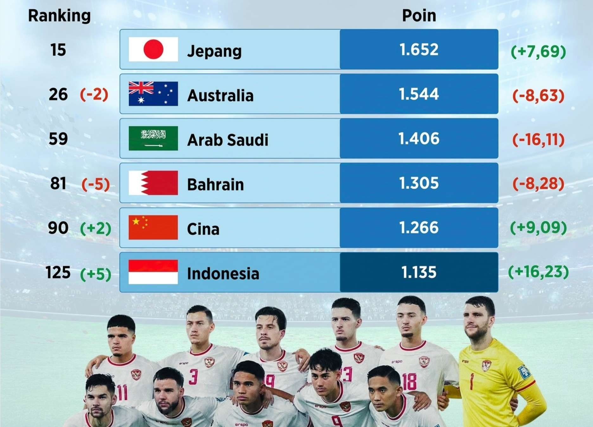

Tentang Timnas Indonesia
Tim Nasional Sepakbola Indonesia adalah tim yang mewakili Indonesia di kancah internasional. Tim ini berada di bawah naungan PSSI (Persatuan Sepak Bola Seluruh Indonesia) dan telah menjadi bagian dari FIFA sejak tahun 1952.
Ranking Dunia
Saat ini, Timnas Indonesia berada di peringkat 125 dunia (berdasarkan peringkat FIFA terbaru pada tahun 2024).
Kemenangan bersejarah Timnas Indonesia atas Arab Saudi pada Matchday 6 Grup C putaran ketiga Kualifikasi Piala Dunia 2026 memberikan dampak besar. Selain membuka peluang lolos ke putaran selanjutnya, hasil positif ini membawa Indonesia naik lima peringkat dalam ranking FIFA terbaru. Menurut perhitungan Football Ranking, skuad Garuda kini menempati peringkat ke-125 dunia. Kenaikan ini tak lepas dari tambahan 19,16 poin setelah kemenangan 2-0 atas Arab Saudi di Stadion Utama Gelora Bung Karno (19/11/2024).
selain kemenangan atas Arab Saudi, penurunan performa tim lain seperti Sierra Leone dan Kongo turut membantu kenaikan Indonesia di ranking FIFA.
Sierra Leone: Kalah dari Zambia dan kehilangan 9,49 poin, turun ke posisi 129.
Kongo: Kalah dari Uganda, kehilangan 9,71 poin, turun ke posisi 128.
Penurunan ini memberi celah bagi Indonesia untuk naik dua peringkat tambahan, dari posisi 127 ke 125.
Rangking Timnas sepakbola Indonesia di grup c
Sejarah dan Perkembangan
Timnas Indonesia terbentuk sekitar tahun 1930an, di mana saat itu Timnas Indonesia masih bernama Dutch East Indies, atau dalam Bahasa Indonesia Hindia Belanda, dikarenakan yang mencetuskan pembentukan Timnas saat itu adalah para penjajah Belanda yang masih menduduki negeri kita
Pertandingan pertama Timnas Indonesia di bawah nama Hindia Belanda yaitu melawan Jepang pada tahun 1934 di event Far Eastern Games, dan dimengankan Timnas Hindia Belanda dengan skor yang meyakinkan, 7-1
Kemudian event pertama Timnas setelah berganti nama menjadi Timnas Indonesia, yaitu pada tahun 1951, di mana Indonesia mengakui keunggulan India dengan skor 3-0 tanpa balas.
Kemenangan terbesar Indonesia hingga saat ini yaitu ketika meraih kemenangan 13-1 melawan Filippina pada tahun 2002.
Sedangkan kekalahan terbesar Indonesia yaitu saat skuad garuda dibantai 10-0 tanpa balas oleh Bahrain pada tahun 2012.